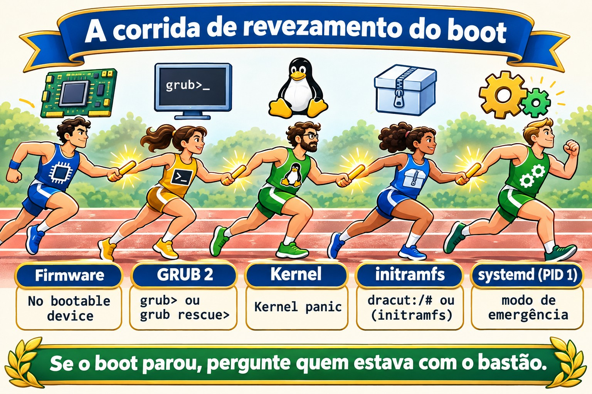
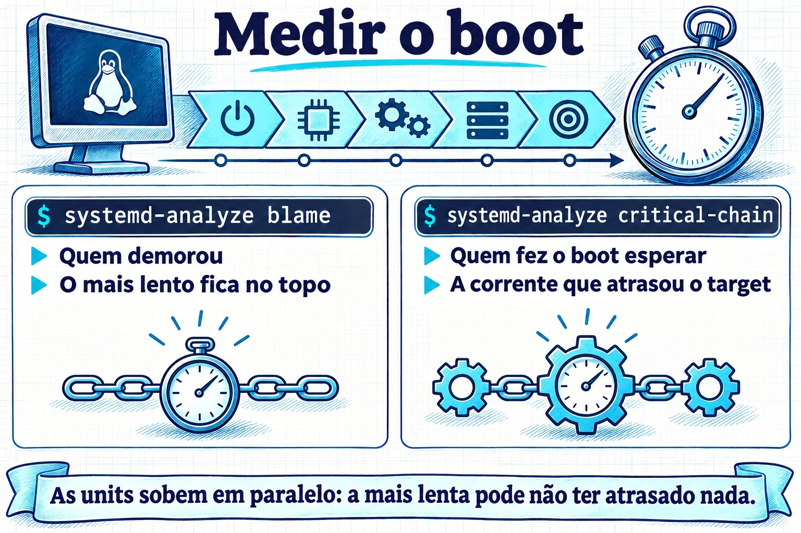

Aula 4.1 · Como o Linux liga
Até aqui você ligou as VMs e entrou nelas. Hoje você olha o que acontece no meio: entre apertar o botão e aparecer o login:, cinco programas passam o controle um para o outro. Quando um servidor não volta depois de um reboot, a primeira pergunta é sempre em qual dessas cinco etapas ele parou, e cada etapa tem uma cara diferente na tela. Quem sabe ler essa cara conserta o servidor; quem não sabe, reinstala.
Formato núcleo. A partir desta aula, cada aula traz o essencial: o que você precisa saber sem internet, numa emergência, e o que você faz na mão. Os detalhes que não entraram estão listados na seção 12, para você puxar no DeepTutor quando precisar.
| Ficha | Aula 4.1 |
|---|---|
| Módulo | M4 · Boot e systemd, aula 1 de 4 |
| Quando | Semana 8 |
| Ao final você consegue | Dizer as cinco etapas do boot e o que cada uma entrega para a próxima; descobrir se a máquina usa UEFI ou BIOS; achar o kernel e o initramfs no /boot e a linha de comando do kernel em /proc/cmdline; confirmar que o PID 1 é o systemd e qual é o target padrão; ler o boot atual e o anterior com journalctl -b; achar o que atrasou o boot com systemd-analyze |
| Pré-requisitos | Aula 2.3 (processos e journalctl); Aula 3.5 (vim e sudoedit) |
| Tempo | Cerca de 1h30 |
| Snapshots | m4a1-inicio e m4a1-fim nas duas VMs |
1 · Aquecimento
Três perguntas, de cabeça. Escreva as respostas; o Gabarito confere no fim.
- A máquina liga: aparece o logo do fabricante, depois um menu com uma lista de kernels, depois texto rolando, depois o
login:. Palpite: quem mostra o menu, e quem mostra o texto que rola? - O SSH já aceita a sua conexão, mas o
systemd-analyzeresponde que o boot ainda não terminou. Palpite: como pode? - Palpite: qual é o número do processo do
systemd, e por que justo esse?
2 · Por que importa
| O chamado | A resposta errada | O que acontece |
|---|---|---|
| "O servidor não voltou depois do reboot" | Restaurar o backup | Sem saber em qual etapa ele parou, você não sabe o que consertar, e pode restaurar um backup com o mesmo problema. A tela diz a etapa: grub>, Kernel panic, dracut:/# ou Give root password for maintenance são quatro problemas diferentes |
| "Ficou lento para subir depois da atualização" | Esperar e reclamar | O systemd-analyze blame mostra em dois segundos qual serviço segurou o boot |
| "Reiniciou sozinho de madrugada" | Olhar o journalctl, que só mostra o boot de agora | O motivo está no boot anterior, com journalctl -b -1. Se o journal não for persistente, o motivo sumiu no reboot, e você nunca vai saber |
| "Atualizei o kernel e não sobe mais" | Reinstalar | O GRUB guarda os kernels anteriores. Escolher o anterior no menu põe o servidor no ar hoje; a causa você investiga com calma, na Aula 4.4 |
3 · Modelo mental
O boot é uma corrida de revezamento com cinco corredores. Cada um faz uma coisa só e passa o bastão: o firmware acha o disco e carrega o GRUB; o GRUB põe o kernel e o initramfs na memória e entrega a linha de comando; o kernel liga o hardware e roda o initramfs; o initramfs acha e monta o disco de verdade e chama o
systemd; o systemd sobe os serviços até o target padrão. Se o boot parou, a pergunta é sempre a mesma: quem estava com o bastão?
| Etapa | Onde mora | O que entrega | Se parar aqui, você vê |
|---|---|---|---|
| 1 · Firmware (UEFI ou BIOS) | Na placa-mãe, ou na configuração da VM | O GRUB carregado do disco | Só o logo, ou No bootable device |
| 2 · GRUB 2 | /boot/efi (UEFI) e /boot | Kernel e initramfs na memória, mais a linha de comando | O prompt grub> ou grub rescue> |
| 3 · Kernel | /boot/vmlinuz-VERSÃO | Hardware ligado, initramfs rodando | Kernel panic |
| 4 · initramfs | /boot/initramfs-VERSÃO.img (Rocky) ou /boot/initrd.img-VERSÃO (Debian) | O disco raiz montado, e o systemd chamado | Um shell dracut:/# (Rocky) ou (initramfs) (Debian), depois de esperar o disco |
| 5 · systemd, o PID 1 | /usr/lib/systemd/systemd | Os serviços e o target padrão | O modo de emergência: Give root password for maintenance |
Guarde a tabela. Ela é o mapa de toda emergência de boot do resto do curso.


4 · O essencial
UEFI ou BIOS
O firmware é o primeiro programa a rodar. O BIOS, o antigo, lê o primeiro setor do disco e roda o que estiver lá. O UEFI, o atual, guarda uma lista de entradas de boot na memória da placa (a NVRAM) e abre um arquivo .efi numa partição pequena, em FAT, chamada ESP, que o Linux monta em /boot/efi. Numa VM do Proxmox, depende da VM: OVMF é UEFI, SeaBIOS é BIOS.
Para saber qual é, sem reiniciar: se existe /sys/firmware/efi, o sistema subiu por UEFI.
GRUB 2
O GRUB mostra o menu, carrega o kernel e o initramfs escolhidos e passa a linha de comando do kernel. O arquivo dele, o grub.cfg, é gerado: você não edita à mão, porque a próxima atualização de kernel o reescreve. Na Rocky, cada kernel tem uma entrada em /boot/loader/entries/ e a ferramenta é o grubby; na Debian, você muda o /etc/default/grub e roda update-grub. As duas coisas ficam para a Aula 4.4.
Kernel e a linha de comando
O kernel é um arquivo, /boot/vmlinuz-VERSÃO, e a versão que está rodando é a do uname -r. A linha de comando que o GRUB passou está em /proc/cmdline. Os itens que você vai ver sempre:
root=: onde está o disco raiz, por UUID ou por nome de volume LVM.ro: o kernel monta a raiz só para leitura, e osystemdremonta para escrita depois de conferir.quiete, na Rocky,rhgb: escondem o texto do boot. Tirá-los no menu do GRUB é o primeiro passo para ver onde o boot trava.
initramfs
O kernel precisa ler o disco para achar o /, mas o driver do disco, o LVM ou a criptografia estão no próprio disco. O initramfs resolve isso: é um mini-sistema que o GRUB põe na memória junto com o kernel, com só o que é preciso para achar e montar a raiz de verdade. Quando consegue, ele passa o controle para o /sbin/init da raiz, que é o systemd. A Rocky gera o initramfs com o dracut, e a Debian com o update-initramfs; os dois rodam sozinhos a cada kernel novo.
Se o initramfs não tem o driver certo, ou não acha o disco do root=, você cai no shell dele depois de uma espera, ou num Kernel panic que fala em unable to mount root fs.
systemd, o PID 1
O systemd é o primeiro processo que o kernel inicia na raiz de verdade, então recebe o número 1. Todos os outros processos descendem dele, e se ele morre, o kernel entra em pânico. Ele sobe as units (serviços, montagens, sockets) em paralelo, respeitando as dependências, até chegar ao target padrão: um grupo de units com nome, como multi-user.target para servidor, ou graphical.target com interface gráfica.
Antes do systemd, o padrão era o SysVinit, com níveis numerados, os runlevels. Documentação antiga ainda usa a correspondência:
| Runlevel | Target | Para que serve |
|---|---|---|
| 0 | poweroff.target | Desligar |
| 1 | rescue.target | Manutenção, um usuário só |
| 3 | multi-user.target | Servidor: rede e serviços, sem interface gráfica |
| 5 | graphical.target | O 3 mais a interface gráfica |
| 6 | reboot.target | Reiniciar |
Ler o boot
journalctl -b: tudo do boot atual.-b -1é o anterior,-b -2o de antes, e--list-bootslista os que o journal guardou.journalctl -b -p err: só os erros do boot atual.journalctl -k, ousudo dmesg: só as mensagens do kernel, onde aparecem disco, rede e hardware.- O journal só guarda boots anteriores se for persistente, gravado em
/var/log/journal. Se essa pasta não existe, ele fica em/run/log/journal, na memória, e some a cada reboot.
Medir o boot
systemd-analyze: quanto tempo levou cada fase.systemd-analyze blame: quanto cada unit levou, da mais lenta para a mais rápida. Cuidado: as units rodam em paralelo, então a mais lenta nem sempre atrasou o boot.systemd-analyze critical-chain: a corrente de units que de fato atrasou o target padrão. Comece por aqui.systemctl is-system-running:running(tudo certo),degraded(alguma unit falhou: veja comsystemctl --failed) oustarting(o boot ainda não terminou).
Rocky × Debian
| Rocky | Debian | |
|---|---|---|
| Configuração do GRUB | /boot/grub2/grub.cfg e /boot/loader/entries/ | /boot/grub/grub.cfg |
| Mudar o GRUB | grubby | /etc/default/grub e update-grub |
| initramfs | /boot/initramfs-VERSÃO.img, gerado pelo dracut; o conteúdo, com lsinitrd | /boot/initrd.img-VERSÃO, gerado pelo update-initramfs; o conteúdo, com lsinitramfs |
| Shell do initramfs | dracut:/# | (initramfs) |
| Log em texto além do journal | /var/log/messages, se o rsyslog estiver instalado | Nenhum, por padrão: a Debian 12 não instala mais o rsyslog |
dmesg sem sudo | Costuma funcionar | Recusa: Operation not permitted |
Confira as duas últimas linhas nas suas VMs, no lab. Depende do que foi instalado.
5 · Lab guiado
Faça cada passo nas duas VMs. Os comandos são os mesmos, salvo onde o passo diz Rocky ou Debian. Hoje você só lê: nada do que você roda até o Passo 4 muda o sistema.
Passo 0 · Snapshot e pasta
No node do Proxmox:
qm snapshot 201 m4a1-inicio
qm snapshot 202 m4a1-inicioNas duas VMs:
mkdir -p ~/lab41 && cd ~/lab41Passo 1 · Firmware e GRUB
[ -d /sys/firmware/efi ] && echo UEFI || echo BIOS
findmnt /boot/efi
ls /bootSe deu UEFI, veja as entradas de boot da placa, e qual delas foi usada agora (BootCurrent):
sudo efibootmgr -vSe deu BIOS, o findmnt não mostra nada e o efibootmgr responde EFI variables are not supported on this system. As duas respostas estão certas: a sua VM usa SeaBIOS.
Na Rocky, veja as entradas do menu, uma por kernel instalado:
sudo ls /boot/loader/entries/Passo 2 · Kernel, linha de comando e initramfs
Decida 1. Antes de rodar o próximo comando, marque: o root= da linha de comando vai mostrar
- a) um nome como
/dev/sda2 - b) um
UUID=...ou um nome de volume como/dev/mapper/... - c) nada: o
root=não aparece
uname -r
cat /proc/cmdline| Se você marcou | Resultado | Por quê |
|---|---|---|
| a | Errou, e isso é bom | O nome sda vem da ordem em que o kernel achou os discos. Mude a ordem, ou acrescente um disco, e o sda2 passa a ser outro. Ninguém instala assim hoje |
| b | Acertou | O UUID é gravado no sistema de arquivos e não muda. O nome do volume LVM também não. A Rocky padrão usa LVM (/dev/mapper/rl-root); a Debian, em geral, UUID |
| c | Errou | Sem root=, o initramfs não sabe qual disco montar. É a primeira coisa a conferir quando o boot cai no shell do initramfs |
Para fixar: o root= sempre usa um nome que não muda entre boots.
Agora o initramfs do kernel que está rodando, e o que tem dentro dele:
# Rocky
ls -lh /boot/initramfs-$(uname -r).img
sudo lsinitrd | head -30
# Debian
ls -lh /boot/initrd.img-$(uname -r)
lsinitramfs /boot/initrd.img-$(uname -r) | head -30Repare no tamanho, dezenas de MB, e no conteúdo: um bin, um lib com módulos de disco, e, na Rocky, os módulos do LVM. É um sistema pequeno, feito só para achar o disco de verdade.
Passo 3 · PID 1 e target padrão
Decida 2. Marque: o /sbin/init, que o initramfs chama no fim, é
- a) um programa próprio, chamado
init - b) um link para o
systemd - c) um arquivo que não existe mais
ls -l /sbin/init
ps -p 1 -o pid,comm,args
systemctl get-default
systemctl is-system-running
systemctl --failed| Se você marcou | Resultado | Por quê |
|---|---|---|
| a | Errou | Era assim no SysVinit. Hoje o nome ficou só por compatibilidade |
| b | Acertou | O ls -l mostra a seta: init -> ../lib/systemd/systemd. Na Rocky o /sbin já é um link para /usr/sbin, então você pode ver dois saltos |
| c | Errou | O kernel e o initramfs ainda procuram /sbin/init pelo nome. Sem ele, o boot para com Kernel panic: No working init found |
Para fixar: o PID 1 é o systemd, e /sbin/init é só o nome antigo que aponta para ele.
Num servidor, o get-default deve responder multi-user.target. Se o is-system-running disser degraded, o --failed mostra qual unit falhou: anote no Diário, porque é o primeiro problema real que a VM está te mostrando.
Passo 4 · Ler o boot, e guardar os próximos
journalctl --list-boots
ls -d /var/log/journalSe o --list-boots só mostra uma linha, a do boot 0, e o ls diz que /var/log/journal não existe, o journal está na memória. Deixe persistente:
sudo mkdir -p /var/log/journal
sudo systemctl restart systemd-journald
ls /var/log/journalAparece uma pasta com um nome comprido, o machine-id: a partir de agora, o journal grava em disco. A forma explícita é pôr Storage=persistent na seção [Journal] do /etc/systemd/journald.conf e reiniciar o systemd-journald.
Agora leia o boot atual:
journalctl -b -p err
journalctl -k | head -20
dmesg | head -5
sudo dmesg | head -5O -p err costuma trazer alguns erros sem importância numa VM, como um sensor ou um dispositivo que o hipervisor não tem. Ler e saber o que é normal na sua máquina é o que vai te deixar perceber o anormal. Anote na tabela Rocky × Debian da seção 4 se o dmesg sem sudo funcionou em cada uma, e se existe /var/log/messages.
Passo 5 · Medir o boot e reiniciar
systemd-analyze
systemd-analyze blame | head -10
systemd-analyze critical-chainCompare o topo do blame com a corrente do critical-chain. Muitas vezes são units diferentes: o blame diz quem demorou, e o critical-chain diz quem fez o boot esperar.
Agora reinicie e confira que o boot anterior foi guardado:
sudo systemctl rebootDepois de entrar de novo:
journalctl --list-boots
journalctl -b -1 -n 20A lista tem agora pelo menos duas linhas, e o -b -1 -n 20 mostra as últimas 20 linhas do boot anterior: o desligamento que você pediu. É exatamente o que você vai ler no dia em que um servidor reiniciar sozinho.
6 · Quebre e conserte
A quebra: um serviço que segura o boot por 40 segundos. Crie o arquivo:


sudoedit /etc/systemd/system/lento.service[Unit]
Description=Servico lento de proposito (Aula 4.1)
[Service]
Type=oneshot
ExecStart=/bin/sleep 40
[Install]
WantedBy=multi-user.targetAtive e reinicie:
sudo systemctl daemon-reload
sudo systemctl enable lento.service
sudo systemctl rebootO diagnóstico. Entre por SSH assim que a VM aceitar, sem esperar, e rode:
systemctl is-system-running
systemd-analyze
systemctl list-jobsO primeiro responde starting; o segundo diz que o boot ainda não terminou; o terceiro mostra o lento.service rodando e o multi-user.target esperando por ele. Espere os 40 segundos e rode de novo:
systemctl is-system-running
systemd-analyze blame | head -3
systemd-analyze critical-chainO lento.service está no topo do blame, com 40 segundos, e na corrente do critical-chain, logo antes do multi-user.target.
O conserto:
sudo systemctl disable lento.service
sudo rm /etc/systemd/system/lento.service
sudo systemctl daemon-reload
sudo systemctl rebootDepois do reboot, o systemd-analyze volta ao tempo de antes, e o systemctl status lento.service responde que a unit não existe.
A lição. O SSH aceitou você antes do boot terminar, porque o sshd não depende do lento.service: o systemd sobe as units em paralelo. Então "já consigo entrar" não quer dizer "o boot terminou". Quem diz isso é o is-system-running. E o caminho do diagnóstico é sempre o mesmo: is-system-running para saber se terminou, critical-chain para saber quem segurou, blame para ver quanto.
7 · Armadilhas
- Editar o
grub.cfgà mão. Funciona até a próxima atualização de kernel, que reescreve o arquivo. Mudanças no GRUB são comgrubbyou/etc/default/grubeupdate-grub, na Aula 4.4. - Contar com o
journalctl -b -1sem journal persistente. A resposta é que o boot não existe, e o motivo do reboot sumiu. Confira o--list-bootsem todo servidor novo que você receber. - Ler o
blamecomo se fosse uma fila. As units rodam em paralelo. A mais lenta pode não ter atrasado nada. Quem atrasou está nocritical-chain. - Achar que o SSH aceitar é o fim do boot. É o que a quebra mostrou. O
is-system-runningresponde de verdade. - Esquecer o
daemon-reload. Depois de criar ou mudar um arquivo de unit, osystemdainda usa a versão antiga e avisa comRun 'systemctl daemon-reload' to reload units. Leia os avisos. - Rodar
efibootmgrnuma máquina BIOS e achar que quebrou. A mensagemEFI variables are not supportedsó quer dizer que a máquina não é UEFI. - Apagar kernels antigos para liberar o
/boot. O kernel anterior é a sua saída quando o novo não sobe. Os gerenciadores de pacote já guardam alguns de propósito; deixe eles cuidarem disso.
8 · Quiz
Responda sem olhar as seções acima. O Gabarito comentado está no fim.
- Ponha em ordem: kernel,
systemd, firmware, initramfs, GRUB. - Depois de um minuto parado, o boot cai num prompt
dracut:/#. Qual etapa falhou, e qual é o primeiro suspeito? - Um servidor reiniciou de madrugada. Você roda
journalctl -b -1e a resposta é que esse boot não existe. O que isso diz sobre o servidor, e o que você faz para a próxima vez? - O topo do
systemd-analyze blameé umexemplo.servicecom 12 segundos, mas ele não aparece nosystemd-analyze critical-chain. Ele atrasou o boot? - A que targets correspondem os runlevels 3 e 5? Com que comando você vê o target padrão?
- Which file shows the kernel command line that the running system was booted with? a)
/etc/default/grubb)/proc/cmdlinec)/boot/grub2/grub.cfgd)/etc/fstab
9 · Cola
Para saber de cor
A corrida de revezamento, com o sinal de cada etapa quando ela para:
- Firmware (UEFI ou BIOS):
No bootable device - GRUB:
grub>ougrub rescue> - Kernel:
Kernel panic - initramfs:
dracut:/#ou(initramfs) - systemd:
Give root password for maintenance
E os comandos que você usa sem consultar:
cat /proc/cmdline # o que o GRUB passou ao kernel
systemctl get-default # o target padrão
systemctl is-system-running # running, degraded ou starting
systemctl --failed # quem falhou
journalctl -b -p err # erros do boot atual
journalctl -b -1 # o boot anterior
journalctl --list-boots # quantos boots o journal guardou
systemd-analyze critical-chain # quem segurou o bootPara consultar
| Para | Rocky | Debian |
|---|---|---|
| Ver se é UEFI | [ -d /sys/firmware/efi ] | O mesmo |
| Entradas de boot da placa (UEFI) | sudo efibootmgr -v | O mesmo |
| Entradas do menu do GRUB | /boot/loader/entries/ | /boot/grub/grub.cfg (só ler) |
| Conteúdo do initramfs | sudo lsinitrd | lsinitramfs /boot/initrd.img-$(uname -r) |
| Mensagens do kernel | journalctl -k ou dmesg | journalctl -k ou sudo dmesg |
| Journal persistente | mkdir -p /var/log/journal e reiniciar o systemd-journald | O mesmo |
| Tempo de cada unit | systemd-analyze blame | O mesmo |
Flashcards
- Para que serve o initramfs? → Achar e montar o disco raiz, com os drivers que o kernel ainda não tem, e chamar o
systemd. - Onde fica a linha de comando usada no boot atual? →
/proc/cmdline. - Qual é o PID do
systemd, e por quê? → 1: é o primeiro processo que o kernel inicia na raiz de verdade. degradednois-system-runningquer dizer? → Subiu, mas alguma unit falhou: veja comsystemctl --failed.blameoucritical-chainpara saber quem atrasou? →critical-chain.- Por que o journal às vezes não tem o boot anterior? → Ele está em
/run/log/journal, na memória, porque/var/log/journalnão existe. - Runlevel 3 e 5? →
multi-user.targetegraphical.target.
10 · Checklist de saída
- [ ] Digo as cinco etapas em ordem e o que cada uma entrega para a próxima.
- [ ] Sei se cada VM subiu por UEFI ou BIOS, e como descobri.
- [ ] Achei o kernel e o initramfs no
/boote li oroot=no/proc/cmdline. - [ ] Mostrei que o PID 1 é o
systemde que o target padrão émulti-user.target. - [ ] O journal das duas VMs é persistente, e o
--list-bootsmostra mais de um boot. - [ ] Achei o
lento.servicecomis-system-running,critical-chaineblame, e o removi. - [ ] Preenchi as duas linhas da tabela Rocky × Debian que dependiam das minhas VMs.
Último exercício, sem olhar. Numa folha, escreva as cinco etapas e, ao lado de cada uma, um comando ou arquivo que prova que ela rodou no boot atual. Depois confira nas VMs.
Reboot e conferência. Reinicie as duas VMs e confira:
journalctl --list-boots | tail -3
systemctl status lento.service
systemctl is-system-runningUm boot a mais na lista; a unit lento.service não existe; o sistema running, ou degraded com o mesmo motivo que você anotou no Passo 3.
Snapshot de fim, no node do Proxmox:
qm snapshot 201 m4a1-fim
qm snapshot 202 m4a1-fim11 · Na vida real
Missão, só leitura. Num servidor Linux real pelo qual você responde, rode apenas comandos de leitura:
[ -d /sys/firmware/efi ] && echo UEFI || echo BIOS
systemd-analyze
journalctl --list-boots | tail -5
systemctl --failedNão mude nada nele. Se o journal não for persistente, ou se houver units falhando, anote e leve para a sua lista de melhorias, para decidir com calma e com janela de manutenção.
Diário. Anote: o que cada VM respondeu no is-system-running; o tempo de boot de cada uma; o que o servidor real mostrou; e uma frase com as suas palavras sobre a diferença entre blame e critical-chain.
Amanhã, sem olhar:
- Qual é a etapa que monta o disco raiz?
- Que comando mostra o boot anterior?
- O SSH entrou. O boot terminou?
12 · Aprofundar quando quiser
Ficaram de fora, de propósito. Puxe quando precisar, ou quando a curiosidade bater:
- Secure Boot: o
shime as chaves que deixam o firmware confiar no GRUB e no kernel. - MBR e GPT: como o BIOS e o UEFI acham o carregador no disco, e o que é a partição BIOS boot.
- Gerar o initramfs de novo:
dracut -feupdate-initramfs -u, e quando isso é necessário. - Parâmetros do kernel para emergência:
systemd.unit=,rd.breakeinit=. Entram na Aula 4.4. - SysVinit e Upstart: os scripts em
/etc/init.de os runlevels. Vale reconhecer em servidor antigo. - O boot em gráfico:
systemd-analyze plot > boot.svg. - Limites do journal:
SystemMaxUse=nojournald.conf, para o journal não encher o disco.
No DeepTutor:
!explica initramfs: por que ele existe e o que tem dentro!feynman as cinco etapas do boot(você explica, ele corrige)!quiz 4.1, 5 perguntas
Gabarito comentado
Aquecimento
- O menu é do GRUB. O texto que rola vem do kernel e depois do systemd. O logo antes de tudo é do firmware.
- O
systemdsobe as units em paralelo. Osshdjá está no ar enquanto outra unit ainda segura o target padrão. Foi exatamente a quebra da seção 6. - 1: é o primeiro processo que o kernel inicia na raiz de verdade. Os outros descendem dele.
Quiz
- Firmware, GRUB, kernel, initramfs,
systemd. O GRUB carrega o kernel e o initramfs juntos, mas o kernel roda primeiro e é ele quem executa o initramfs. - O initramfs: ele não achou o disco raiz. O primeiro suspeito é o
root=da linha de comando apontando para um UUID ou volume que não existe, por exemplo depois de um disco trocado ou um volume renomeado. O segundo é um driver que falta no initramfs. - O journal desse servidor não é persistente, e o motivo do reboot se perdeu. Para a próxima: criar
/var/log/journale reiniciar osystemd-journald, ouStorage=persistentnojournald.conf. Se houver/var/log/messages, ele pode ter alguma pista. - Provavelmente não. Ele demorou, mas em paralelo, e o target padrão não esperou por ele. Quem atrasou o boot é quem está no
critical-chain. - 3 é
multi-user.target, e 5 égraphical.target. O comando ésystemctl get-default. - b). O
/etc/default/grube ogrub.cfgdizem o que vai ser usado no próximo boot, e alguém pode ter mudado depois. O/proc/cmdlinemostra o que foi usado no boot atual. O/etc/fstabnão tem nada a ver com a linha de comando.